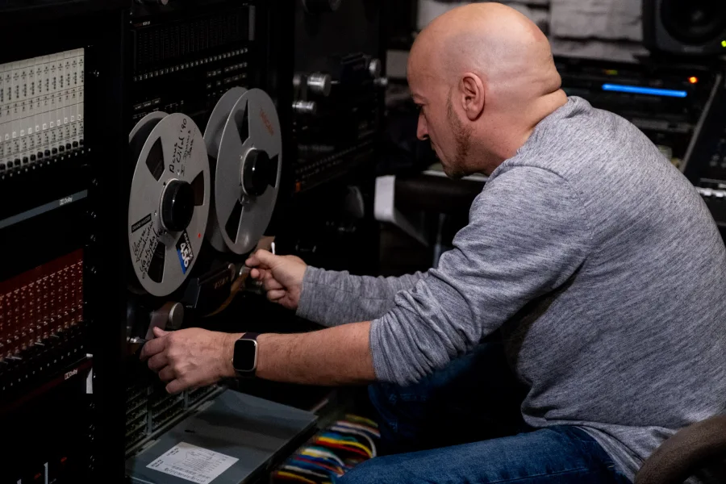
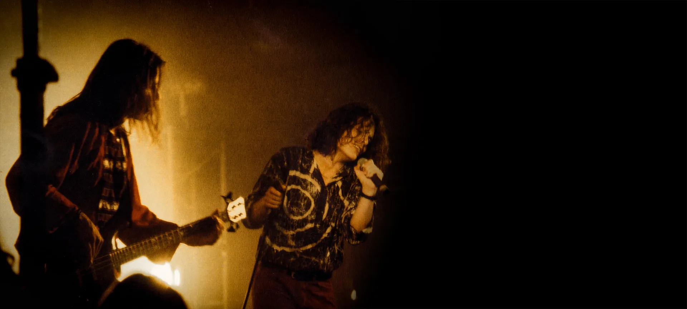

25. Juni 2024 · 2 Min. Lesezeit
Wenn Tonbänder im Backofen schmoren…
Wenn Tonbänder im Backofen schmoren, dann ist das meist ein untrügliches Indiz dafür, dass Profis am Werk sind.
Weiterlesen →Aus der Produktion
Alle Einträge aus der Produktion von Heart and Soul – von den ersten Drehtagen 2019 bis heute.

25. Juni 2024 · 2 Min. Lesezeit
Wenn Tonbänder im Backofen schmoren, dann ist das meist ein untrügliches Indiz dafür, dass Profis am Werk sind.
Weiterlesen →
8. Dez. 2023 · 5 Min. Lesezeit
„Acres Wild waren sowas wie die Popstars von Lahr. Und wir waren halt der Badische Underground."
Weiterlesen →
22. Nov. 2023 · 3 Min. Lesezeit
„DSGO-Hinweis!" – das weiße DIN-A4-Blatt stach uns sofort ins Auge, als wir den Fußballplatz in Grafenhausen betraten.
Weiterlesen →
11. Aug. 2023 · 3 Min. Lesezeit
Sommer, Sonne, Nieselregen. So könnte man unsere jüngsten Drehtage zusammenfassen.
Weiterlesen →18. Juli 2023 · 3 Min. Lesezeit
Ja, es stimmt, es gab doch ganz schön lange nichts Neues über „Heart and Soul" zu lesen oder zu hören.
Weiterlesen →22. Feb. 2022 · 4 Min. Lesezeit
Hallo, hier sind wir wieder. Nach einer ganz schön langen Durstrecke in diesem Blog.
Weiterlesen →14. Okt. 2020 · 3 Min. Lesezeit
Zum ersten Mal seit dem Shutdown im März machten wir uns wieder auf, um Protagonisten zu interviewen.
Weiterlesen →
6. Apr. 2020 · 4 Min. Lesezeit
So war das nun wirklich nicht geplant. Eigentlich hatten wir erwartet, mit den Dreharbeiten weiterzumachen.
Weiterlesen →6. März 2020 · 2 Min. Lesezeit
Im Oktober 2018 gingen wir zum ersten Mal mit unserer Filmidee an die Öffentlichkeit.
Weiterlesen →6. Dez. 2019 · 6 Min. Lesezeit
Es gibt Momente, die man erst so richtig begreift, wenn sie vorbei sind. Das hier war so einer.
Weiterlesen →14. Nov. 2019 · 4 Min. Lesezeit
Wolfgang „Hasche" Hagemann sitzt lachend in seinem „Wohnzimmer", direkt vor der Tanzfläche.
Weiterlesen →4. Nov. 2019 · 2 Min. Lesezeit
Es gibt Settings, die sehen wirklich toll aus. Das Setting für unser Interview war so eins.
Weiterlesen →1. Nov. 2019 · 2 Min. Lesezeit
Unser Drehtag in Mannheim startete eigentlich schon am Dienstagabend.
Weiterlesen →26. Okt. 2019 · 2 Min. Lesezeit
Kaum haben wir begonnen, rast die Zeit. Mittlerweile haben wir schon vier Drehtage absolviert.
Weiterlesen →15. Okt. 2019 · 3 Min. Lesezeit
Los ging's um 12 Uhr, Drehstart am Apostelsee in Ettenheim.
Weiterlesen →10. Sept. 2019 · 1 Min. Lesezeit
So richtig viel Durchschnaufen gab es nach dem Crowdfunding dann doch nicht für unser Filmteam.
Weiterlesen →16. Juni 2019 · 1 Min. Lesezeit
Unglaublich! Es ist geschafft! Am 15.06.2019 um 23:59 Uhr ging unser Crowdfunding erfolgreich zu Ende.
Weiterlesen →
6. Mai 2019 · 2 Min. Lesezeit
Unglaublich: Eine Band, die seit 18 Jahren nicht mehr gemeinsam gespielt hat, gibt ein Unplugged-Konzert.
Weiterlesen →18. Apr. 2019 · 2 Min. Lesezeit
Seit Montag sind wir offiziell ein Crowdfunding-Projekt!
Weiterlesen →